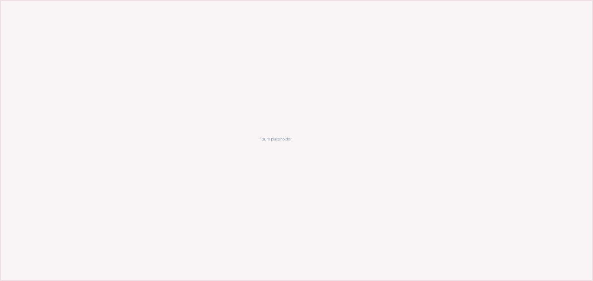

Open with the answer. A reader who stops after this paragraph should still know what you recommend and on what evidence.
Body text is set in a serif face because a paper is read continuously, while
headings, tables and figures keep the sans of the deck so that both documents
belong to the same family. Swap --serif for var(--sans) in
body if you prefer an all-sans paper.
Sections and subsections number themselves through CSS counters, so inserting one in the middle does not force a renumbering by hand.
The framed callout is the paper's version of the question frame used on the slides. Use it to state the question a section answers, then answer it in the paragraph that follows.
Tables carry the same dark header band as the deck.
| Cost item | Option one | Option two |
|---|---|---|
| First line item | 0 | 25,000 |
| Second line item | 12,000 | 18,000 |
| Total | 12,000 | 43,000 |

Close on the decision, the condition that would change it, and what you are asking the reader to do.
Author, A. (Year). Title of the work. Publisher.
Author, B., & Author, C. (Year). Title of the article. Journal Name, 00(0), 00–00.
Delete this line and everything above it that you did not use. The template is a starting point, not a checklist.